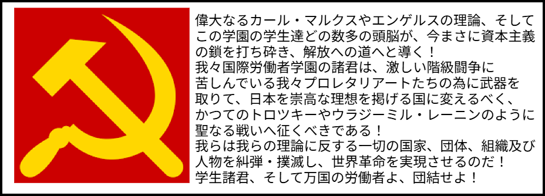
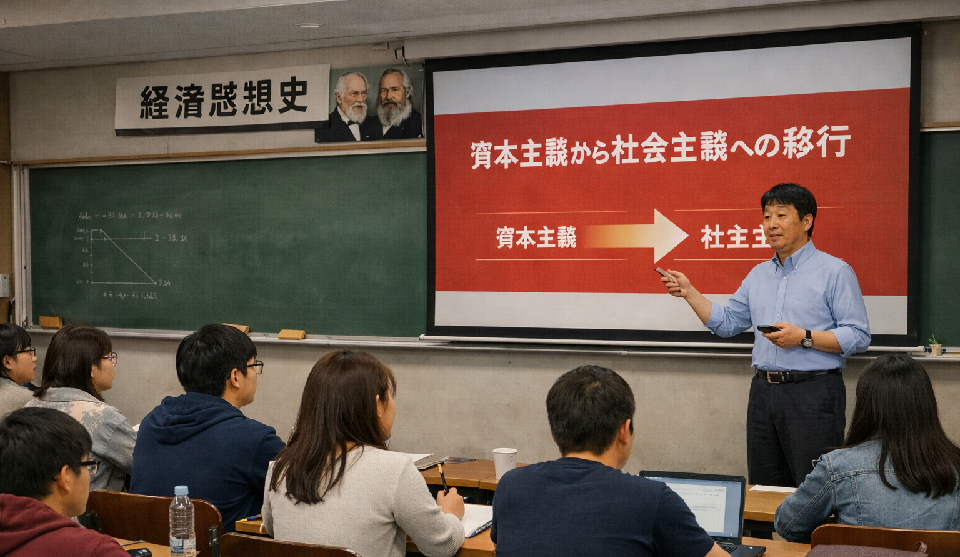
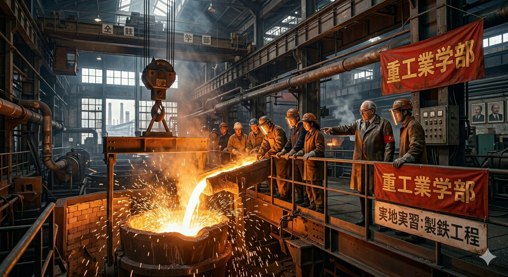
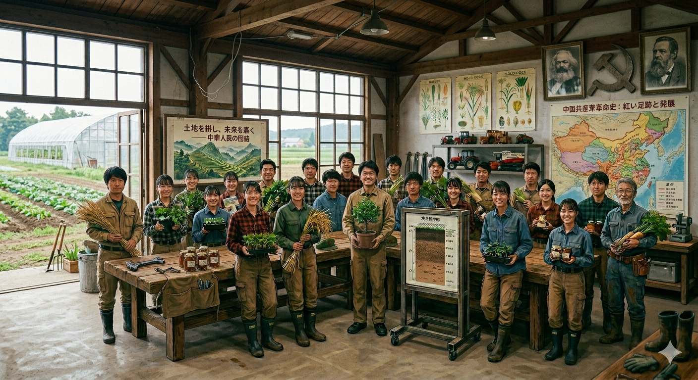
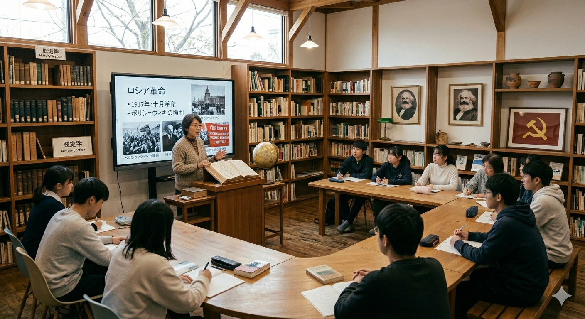
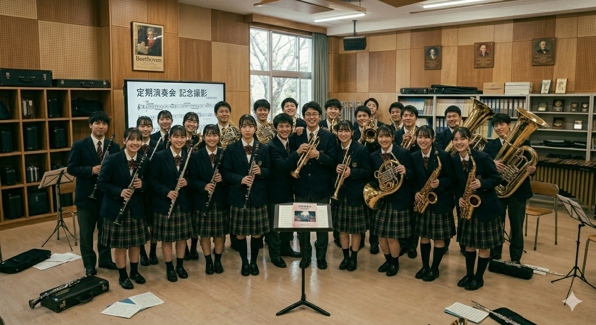
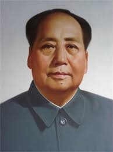

国際労働者大学は、神奈川県 横須賀市に所在する創立30周年の教育機関です。
本大学では、経済・重工業・歴史などの様々な専門教育に加え、学生同士の団結力と労働による創造性を重視しています。
広大なキャンパスには、重工業を学ぶ施設、充実した設備、広い音楽室、軍事演習施設など、学生の生活を支える最先端革命的環境を完備。
また、本大学は「理論だけでは世界は変わらない。万国の労働者でその理念を実現するべきだ。」という考えのもと、革命的教育を推進しています。
学生たちは日々、カール・マルクスの想像した共産主義の理想的な社会を実現する為、学習と研究に励んでいます。あなたもこの大学で、新たな歴史の1ページを刻みませんか？
──三代目校長 吉府 星人「学びは革命の原動力である。」
資本主義の構造と労働の本質を学び、革命的経済について考え、共産的な思考を持つ労働者を育成します。

スターリンも毛沢東も優先的に発展させようとした重工業の技術と基礎を学び、優秀な労働者を育成します。

工業の発展を支える農業の技術や知識を学び、革命を起こす力のある優秀な労働者を育成します。

世界の資本主義国々の歴史を学んで批判し、すべての人が平等なパラダイスみてえな国について考えます。

共産主義国家の軍歌・プロパガンダソングのつくりを学び、実際に演奏や歌唱、本格的な作曲を行います。

ソビエト連邦式の「縦深攻撃」などの戦術を学んで実際に軍事演習を行い、共産主義国家の優秀な兵士を育成します。
※実際の学生の写真を載せると、写真に写っている学生だけに注目が集まってしまい、共産主義の理念に反する事になるので、すべてAIイメージ画像を使用しています。ご了承ください。
今年の入学試験が実施されました。多くの優秀な労働者となる予定の学生が合格しました。
革命講習の開催が六月に予定されています。詳しくは当大学で配布しているパンフレットをご確認ください。
優秀な労働者を目指す学生の活動をサポートする最新の学習施設が完成しました。
本大学の吉府 星人校長は、学生たちを団結させ革命への道に導く最高指導者です。
彼は、学生たちに「学びは革命の原動力である」という信念を持ち、学生たちに革命的な精神を教えています。
趣味：ポケットビリヤード、資本論の暗唱、共産主義の理想的な社会の構築
嫌いな物：資本主義者、反革命分子

二代目校長の毛沢東は、学生たちに革命的な精神を教えより良い学校の運営の指導をしていました。
彼は、文化大革命をこの学校で起こし、学校の近くの美術館にある仏像や歴史的遺産を粛清しました。
趣味：詩の創作、農業の実践、革命的な演説
嫌いな物：資本主義者、反革命分子
初代校長の占染見 令任は、共産主義の理念を広めたいという想いでカール・マルクスとともにこの大学を設立しました。
彼は、毎朝、朝礼で学生たちに共産主義の理念を説き、革命的な精神を教えました。
趣味：革命的な演説、共産主義の理想的な社会の構築
嫌いな物：資本主義者、反革命分子
本大学は、ソビエト社会主義共和国連邦国歌を校歌として採用しています。
学生たちは毎朝の朝礼でこの歌を歌い、ソビエト連邦の理念を胸に刻んでいます。
以下のオーディオプレーヤーから、校歌をお聴きいただけます。